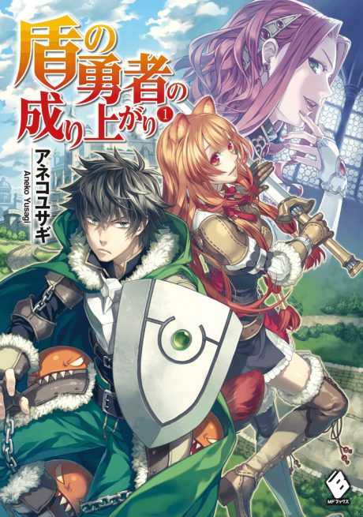

The Rising of the Shield Hero
盾の勇者の成り上がり
After the anime, read the light novel from Volume 15.
7.6AniList score
—Animeter, no votes yet
62episodes, 4 seasons
Rate it or report where you stopped
Anime finished. Where does the story go next?
Start at Volume15
Season 4 adapts light novel volumes 13 to 14, so start at volume 15. The anime has been greatly inspired by the manga and condenses and changes some material, and the light novel is reportedly close to its conclusion.
114ongoing
Season 4Start reading here